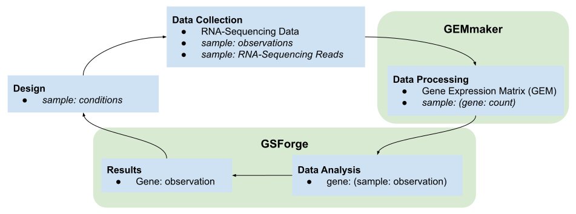

Welcome to GSForge’s documentation!¶
Note
This is a pre-release version of GSForge, and some features and function names may not yet be stable.
GSForge provides the following utilities to aid in collating and analyzing feature selection results
from expression count matrices:
Data structures that index expression and annotation in a single file.
A common interface for membership set selection operators.
Plotting functions for comparing expression as well as set intersections.
It aims to provide tools that are species-agnostic, that allow a practicing researcher to more easily collate and
compare selection results across a variety of methods (from both R and Python).
GSForge is not an analysis tool itself, but the documentation provides example implementations.

Overview¶
You should consider using GSForge when you have:
More than one feature selection method.
Many parameter sets to compare using one (or more) feature selection methods.
More than one normalization to explore.
You have a feature selection method that is non-deterministic.
You should seriously consider using GSForge if you find yourself in more than one of the above categories.
1. Data Structures¶
The core structural components GSForge provides are:
AnnotatedGEM A data object that contains: gene expression matrix with named coordinates for genes and samples. Sample annotations / descriptors. Can store more than one transform of the GEM (e.g. raw counts and TPM normalized counts).
GeneSet A list of gene names, as well as any desired metadata or numerical analysis. Examples of data or analysis that fit within this model include: differential gene expression, machine learning feature selections, and literature sets.
GeneSetCollection An interface that provides utility access to an AnnotatedGEM based on provided GeneSets. e.g. GEM subset selection by GeneSet membership, or by some set operation (union, intersection, difference) from multiple sets.
2. Set Selection Interface¶
In comparing feature selection results the most basic needs are often set operations. e.g., the intersection, union and unique members between one or more sets. Often time subsets of the original data are examined based on a set-operation of one or more feature sets.
GSForge provides this functionality through the GSForge.Interface object,
and the GSForge.get_gem_data function.
3. Plotting Functions¶
GSForge provides a number of plots common to gene expression analysis.
The Interface object powers these plotting functions, which allows users to easily plot only subsets of data based
on set membership.